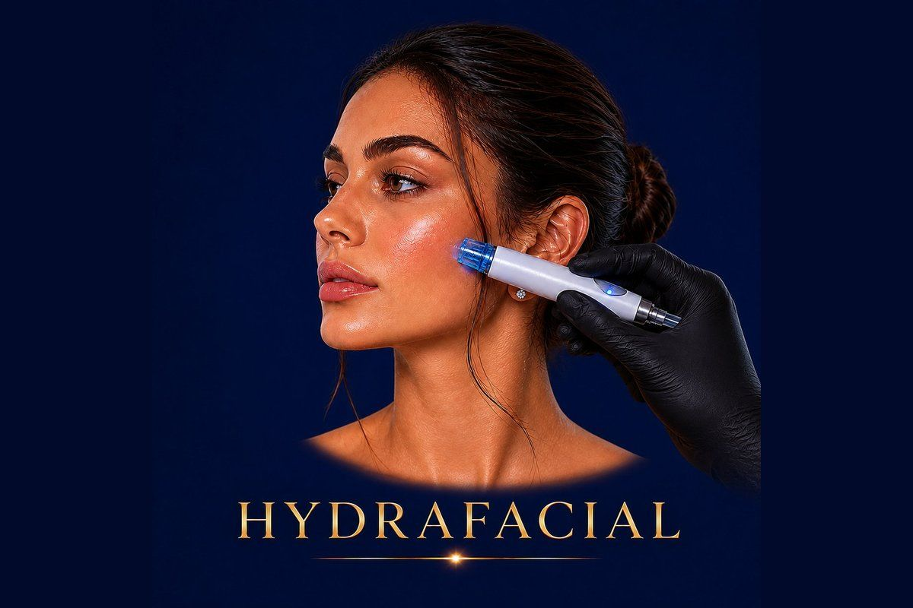

Skin Rejuvenation
The world
✓ Full medical content — verified for SEO and patient information.

About
Hydrafacial is a medical-grade, multi-step facial treatment that combines deep cleansing, gentle exfoliation, painless extraction, and intense hydration with infusion of targeted serums — all delivered through a patented vortex-fusion device. Unlike traditional facials, Hydrafacial doesn't rely on harsh scrubbing or aggressive extraction. The device uses controlled suction and a stream of water and active solutions to lift away impurities, dead skin cells, and oil from inside the pores — while simultaneously delivering antioxidants, peptides, and hyaluronic acid into the skin. The result is immediately visible: a cleaner, brighter, more hydrated, and noticeably more even-toned complexion — with zero downtime. You can return to work or social events the same hour.
Why It Works
The Process
45 minutes and is built around three core steps: 1
Cleanse + Peel A gentle exfoliation step removes the outer layer of dead skin and prepares deeper layers to absorb active ingredients. 2
Extract + Hydrate Using painless suction technology, the device extracts impurities and blackheads from inside the pores while simultaneously infusing hydrating serums. 3
Fuse + Protect Skin is saturated with custom serums chosen for your concern — antioxidants for dullness, peptides for fine lines, brightening boosters for pigmentation, or anti-acne serums for breakouts
Optional finishing steps can include LED light therapy, lymphatic drainage, or eye/lip treatment add-ons
Who It's For
Safety First
Quality You Can Trust
Treatment Comparisons
Traditional facials rely on manual cleansing, steam, and pressure-based extraction. Hydrafacial is a medical device with controlled suction, no painful squeezing, and serum infusion built into the same session — making it deeper, gentler, and more effective.
Chemical peels exfoliate the skin using acids and can cause peeling, redness, and 3–7 days of downtime. Hydrafacial achieves gentle exfoliation with zero downtime — but for stubborn pigmentation or scarring, a chemical peel can be more aggressive and faster-acting. Many patients combine both.
Microdermabrasion uses crystals or a diamond tip to physically exfoliate dry skin. Hydrafacial does the same exfoliation but adds hydration and serum infusion in the same step — making it more comfortable and more multi-functional.
Hydrafacial focuses on skin surface — cleanliness, glow, hydration, texture. Forma works deeper, using radiofrequency to tighten and stimulate collagen. They're not competitors — they're complementary, which is exactly why Hollywood Clinic offers them together as the iFace package.
Mesotherapy and Skin Boosters use injections to deliver nutrients deep into the skin and last for months. Hydrafacial is non-injectable and works on the surface — gentler, faster, no needles, but with shorter-lasting glow.
Investment
Hydrafacial
The cost of a Hydrafacial session at Hollywood Clinic is set after a free consultation, and depends on: Session level — Classic / Deluxe (with one booster) / Platinum (with LED, lymphatic drainage, and additional perks).
Final pricing is determined after a free consultation, because every case is different.
Book Free ConsultationWhy Hollywood Clinic
Dr. Nesma Samir — Laser Aesthetic Dermatology Specialist, 12 years of experience, ideal for acne-prone, pigmentation-prone, and sensitive skin Hydrafacial protocols
Dr. Rana Safwat — Dermatology, Laser & Non-Surgical Aesthetics Consultant, 12+ years of experience, ideal for comprehensive skin plans combining Hydrafacial with other treatments
Dr. Marwa Magdy — Aesthetic Dermatologist & Advanced Injector, expert in combination treatments and the perfect choice when Hydrafacial is part of a larger personalized facial protocol (iFace, Hydrafacial + injectables, etc.)
FAQ